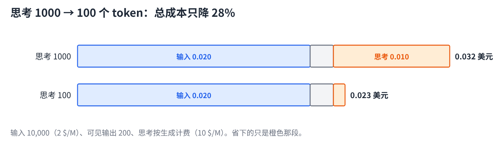
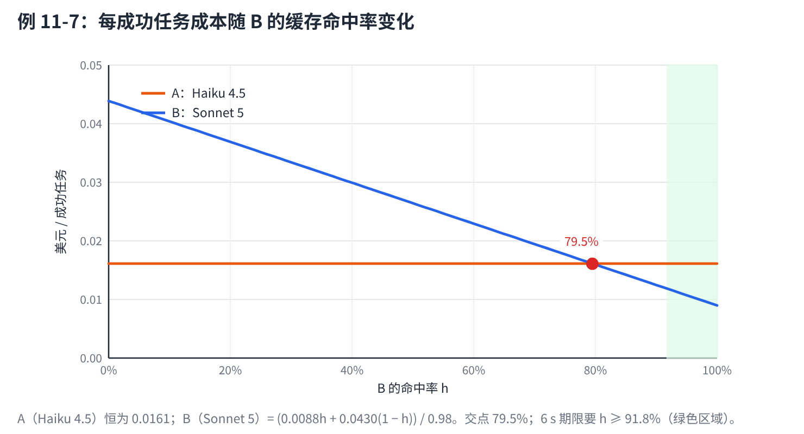
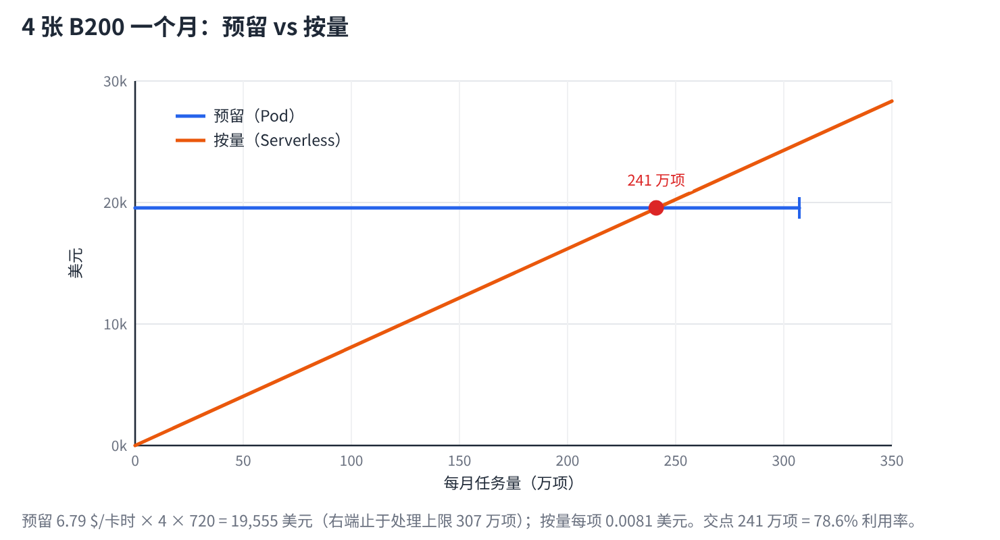
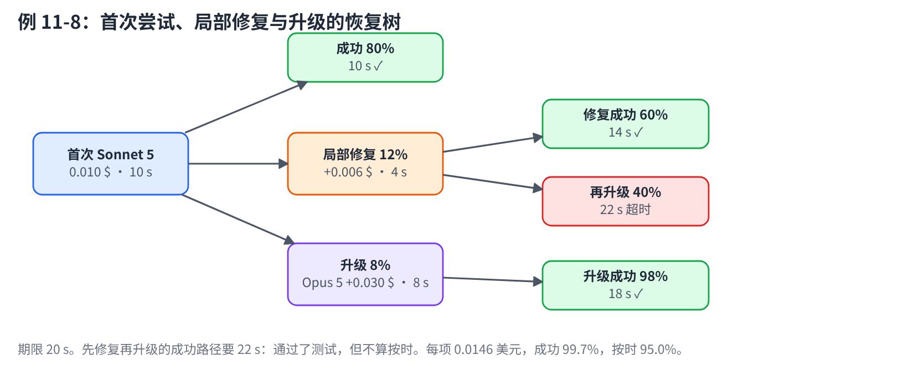
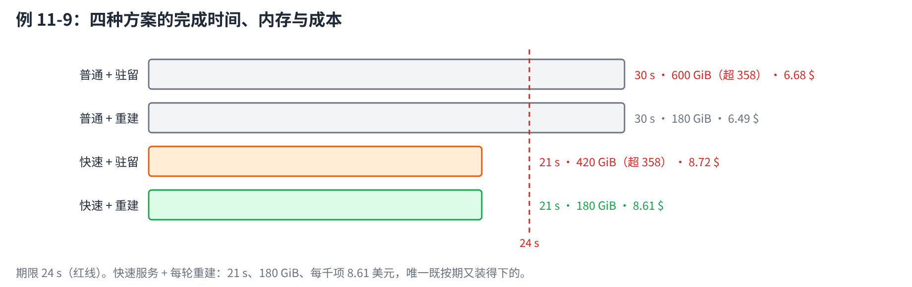
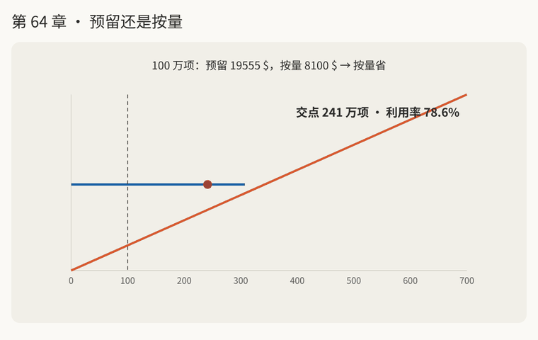

第 64 章 · 模型服务的选择、成本与扩容：按成功任务算账
本地运行
git clone https://github.com/wikieden/ai-infra-from-constraints
cd ai-infra-from-constraints/code/notebooks
pip install jupyterlab torch numpy
jupyter lab ch64_service_cost.ipynb也可以下载后直接用 VS Code 打开 .ipynb 运行。需要 GPU 的章节在 Colab 里选「代码执行程序 → 更改运行时类型 → GPU」。
本章回答：思考 token 砍到十分之一，成本为什么只降 28%？前缀缓存第几次访问就回本？单价贵一倍的模型什么时候反而更便宜？自建、按量、订阅在多少用量处换手？一项任务的完整成本怎么算（失败的尝试也要算）？代码修复平台最后选哪种服务和环境方案才能 24 秒内完成且最省？
讲解日期：2026-11-24 · 上一章：第 63 章 共享资源池与 RL 资源配比 · 下一章：第 65 章 从模型运行时间到完整交互时间
对应原文：materials/ai-infra-book/manuscripts/11-资源调度与运行环境.md§11.4 L458–L577、§11.5 L578–L719（例 11-5 至 11-9，图 11-38 至 11-49）（重点 §11.4.4；其余只讲结论）
本章缩写：API = Application Programming Interface（应用 / 编程 / 接口）· ReAct = Reasoning + Acting（推理 / 行动）· JSONL = JSON Lines（每行一个 JSON）· ACID = Atomicity, Consistency, Isolation, Durability（原子性 / 一致性 / 隔离性 / 持久性）。全部缩写见 缩写与术语表
讲解
第一步：思考预算与缓存计费（2026-11-24）
类比：打车费。 起步价（输入）和到目的地的里程（可见输出）都省不掉；能砍的只是绕路（思考）那段。
原文 §11.4.1–§11.4.2 L460–L512。先用快速服务把每次调用从 9 s 降到 6 s（每副本 32 → 16 个会话，25.3 → 16.9 ms/token），三轮 21 s，满足 24 s——下面算钱。
例 11-5（输入 10,000、可见输出 200；输入 2 $/M、生成 10 $/M，思考按生成计费）：
思考少 90%，总成本只少 28%：输入 0.020、可见输出 0.002 不变。若 100 次各省 0.009、但其中 30 次因预算截断要重试（每次 0.032），反而多花 0.06。
一次调用的成本：
例 11-6：每轮 8,000 公共前缀 + 2,000 新输入，普通 2、缓存创建 2.5、缓存读取 0.2 $/M。十轮无缓存 0.20 美元，有缓存 0.0744 美元；第一次多花 0.004，之后每次省 0.0144，第二次就回本。共访问 \(n\) 次时缓存更省：\(np_u > p_w + (n-1)p_h\)。
- 命中的权重看长度：两次调用前缀 1K 和 9K，请求命中率都是 50%，只命中短的读 10%，只命中长的读 90%。

图 64-1 · 思考占原成本的比例，决定压缩思考能省多少。
一句话：按 token 计费时，先看哪一项占大头；缓存第二次访问就回本。
第二步：路由：命中率和成功率能抵消单价（2026-11-24）
类比：贵的师傅干得快、返工少。 时薪高一倍，但一次做对、用料少，单件成本可能更低。
原文 §11.4.3 L513–L549：
- 排队换命中：A 排 200 ms、命中后前缀 50 ms，B 排 20 ms、未命中 500 ms，网络都 50 ms → A 300 ms、B 570 ms。
- 快速服务的代价：每副本只服务 16 个会话，10 个副本 160 槽装不下 180 个并发 → 要 12 个副本（48 张 B200）；每次占 \(4 \times 9/32 = 1.125\) → \(4 \times 6/16 = 1.5\) B200·秒。
例 11-7（各 1,000 项单次任务，输入 20,000，前缀 19,000 已缓存）：
| A：Haiku 4.5 | B：Sonnet 5 | |
|---|---|---|
| 普通输入 / 缓存读取 / 生成（$/M） | 1 / 0.1 / 5 | 2 / 0.2 / 10 |
| 思考 + 可见输出 | 1,800 + 200 | 100 + 200 |
| 成功概率 | 0.80 | 0.98 |
| 每次成本 | 0.0129 | 命中 0.0088 / 未命中 0.0430 |
B 单价全是 A 的两倍，命中率高于 79.5% 时却更便宜；命中率 50% 时 B 0.0264、A 更便宜。再要求 90% 的提交 6 s 内通过（A 10 s；B 命中 4 s、未命中 12 s）：A 不行，B 要 \(0.98h \ge 0.90\)，即 \(h \ge 91.8\%\)。

图 64-2 · 从左往右，B 先变便宜（79.5%），再满足期限（91.8%）。
一句话：比每个成功任务的成本，而不是每 token 单价。
第三步：自建、按量与订阅（2026-11-24）
类比：买车还是打车。 买车先付一大笔、之后每趟几乎不花钱；打车每趟付钱。跑得多买车划算。
原文 §11.4.4 L550–L577：固定支出 \(F\)、每项新增成本 \(v\)、API 每项 \(c\)：
同一模型（V4-Flash）、同一种 GPU（B200）、同样 batch：
- 预留（Runpod B200 Pod 6.79 \(/卡时）4 卡一个月：\)F = 4 \times 720 \times 6.79 = 19{,}555.2$ 美元，\(v = 0\)。
- 按量（B200 Serverless 8.64 \(/卡时）：每项任务占一个会话 27 s，\)c = 27 \times 4/32 \times 8.64/3600 \approx 0.0081$ 美元。
- 交点 \(19{,}555.2 / 0.0081 \approx\) 241 万项；这组卡一个月最多 307.2 万项，交点在 78.6% 利用率，正好是 \(6.79/8.64\)。

图 64-3 · 100 万项时预留 19,555、按量 8,100；300 万项时按量 24,300、预留更省。
- 效率提升：每 token 25.3 ms 里 decode 15.9、输入处理与上下文重建 9.4；decode 快一倍 → 17.4 ms，总加速 1.46 倍，每百万输出 token 的 GPU 成本 6.0 → 4.1 美元。decode 降到零也还剩 9.4 ms。
一句话：自建要用量够高才摊得薄；交点利用率就是两种单价之比。
第四步：恢复、持久性与完整成本（2026-11-24）
类比：考试按交卷的人数算平均分。 缺考的人也占了考场和监考老师，不能只按交卷的人算费用。
原文 §11.5.1–§11.5.2 L580–L676：
- 没收到"测试完成"，分不清是没做完还是确认丢了：先查已持久化的结果，再看能不能重试。幂等操作重复执行无害，付款、发消息要靠操作标识、事务或补偿。
write()返回 ≠ 已持久化；fsync()才等写入存储。按 ReAct 轮次把"模型输出—工具调用—结果"作为一轮追加到 JSONL，整轮保存成功才进下一轮（Agent 事务借 ACID 的思路）。异步上传要分别记"云端收到的最后一轮"和"从起点连续保存到哪一轮"。- 提交粒度（100 个请求各 200 ms，每次提交 8 ms + 每条 2 ms）：每个提交一次共 21 s、最多重做 0.2 s；每 10 个提交一次 20.28 s、最多重做 2 s。
十项共花 1 美元、五项成功：每项成功 0.2 美元，不是只算成功尝试的 0.1。
例 11-8（首次 Sonnet 5 0.010 美元 10 s，80% 成功、12% 局部修复、8% 直接升级；修复 0.006 美元 4 s 成功 60%；升级 Opus 5 0.030 美元 8 s 成功 98%；期限 20 s）：
| 路径 | 概率 | 完整成本 | 时间 | 按时成功 |
|---|---|---|---|---|
| 首次成功 | 0.800 | 0.010 | 10 s | 是 |
| 首次 → 修复成功 | 0.072 | 0.016 | 14 s | 是 |
| 首次 → 修复 → 升级成功 | 0.047 | 0.046 | 22 s | 否（超时） |
| 首次 → 升级成功 | 0.078 | 0.040 | 18 s | 是 |
| 两条失败路径 | 0.003 | — | — | 否 |
每项 0.0146 美元，成功率 80% → 99.7%，按时成功 95.0%；每成功 0.0146、每按时成功 0.0153（只做首次 0.0125 但只有 80%）。

图 64-4 · 先修复再升级要 22 s，过了 20 s 期限——花了钱、通过了，却不算按时。
一句话：总支出除以合格完成数；恢复提高完成率，也提高单位成本。
第五步：例 11-9，最后选哪个方案（2026-11-24）
原文 §11.5.3 L677–L719：只加 CPU 不行（工具降到零也还有 27 s 模型调用）。模型按 B200 时 6.79 $/卡时，CPU 0.000014 $/CPU·秒，内存 0.0000045 $/GiB·秒：
| 方案 | 完成 | 每项内存 | 平均内存 | 每千项提交 | 按时通过 |
|---|---|---|---|---|---|
| 普通 + 始终驻留 | 30 s | 60 GiB·秒 | 600 GiB | 6.68 美元 | 0 |
| 普通 + 每轮重建 | 30 s | 18 | 180 | 6.49 | 0 |
| 快速 + 始终驻留 | 21 s | 42 | 420（装不下） | 8.72 | 95% |
| 快速 + 每轮重建 | 21 s | 18 | 180 | 8.61 | 95% |

图 64-5 · 普通服务的最后一轮结束在期限之后；快速服务三轮都在期限内。
选快速服务 + 每轮重建，模型副本 10 → 12 个。模型费用占 98% 以上，重建省的主要是容量（420 → 180 GiB，这台主机才装得下），费用只省约 1.2%（每千项按时成功 9.07 vs 9.18 美元）。
- 保留与重建打平的等待 \(G\)：\(2G \times 0.0000045 = 2 \times 2 \times 0.0000045 + 0.1 \times 0.000014\) → \(G \approx 2.16\) s；模型再快到间隔不足 2 s，就该改回保留。
- Amdahl：工具占 10%，加速 2 倍只快 1.05 倍；模型调用占 90%，加速 2 倍快 1.82 倍。
场景代码：Anthropic API 的前缀缓存用 cache_control 标出可缓存的前缀，用量里分别返回三类输入 token（真实 API）：
import anthropic
client = anthropic.Anthropic()
msg = client.messages.create(
model="claude-sonnet-5-5", max_tokens=1024,
system=[{"type": "text", "text": REPO_CONTEXT, "cache_control": {"type": "ephemeral"}}], # 8K 公共前缀
messages=[{"role": "user", "content": new_turn}])
u = msg.usage # input_tokens / cache_creation_input_tokens / cache_read_input_tokens / output_tokens
一句话：先按期限筛，再在可行的里比每个按时成功任务的成本，同时检查容量。
动画演示：自建还是按量

可交互版：animations/64-service-cost.html（滑块：每月任务量 0–700 万；预留单价 3–10 $/卡时；按量单价 4–12 $/卡时；每项占用 GPU 秒 1–6）。
怎么看：
- 水平线是预留（止于处理上限），斜线是按量，交点标出（第三步）；
- 竖线是当前任务量，右边列出两种方式的月成本和更省的一方；
- 播放：100 万项（按量省）→ 300 万项（预留省）→ 效率翻倍（每项 1.69 GPU 秒）→ 预留涨到 8 $/卡时。
练习与作答记录
题 1（第一步）：输入 5,000、可见输出 500、思考 2,000，输入 3、生成 15 $/M。思考砍到 500 时省多少比例？
作答记录：（待作答）
题 2（第三步）：预留每月 10,000 美元、每项新增 0.001；按量每项 0.006。交点多少项？
作答记录：（待作答）
题 3（第四步）：首次 0.02 美元、70% 成功；失败后直接升级 0.05 美元、90% 成功。每项期望成本、成功率、每成功任务成本各多少？
作答记录：（待作答）
口诀
打车起步价和里程省不掉，能砍的只是绕路；缓存第二趟就回本；
贵师傅一次做对，单件可能更便宜；
跑得多买车，跑得少打车，交点在单价之比；
缺考的人也占考场，按交卷人数分摊；
先按期限筛，再比按时成功的单价，最后看装不装得下。
本章复习卡片
I212（思考 1000 → 100 只省 28%；缓存 np_u > p_w + (n−1)p_h、十轮 0.20 → 0.0744；命中按长度加权）、I213（例 11-7 成本交点 h ≈ 79.5%、期限要 91.8%；自建交点 F/(c − v) ≈ 241 万项 = 78.6% 利用率）、I214（C_q = C_all/N_q；恢复树 0.0146 / 0.0153、99.7% / 95%；例 11-9 选快速 + 每轮重建 8.61 美元/千项、12 个副本）。练习做完后，按答错、卡住的地方再补。
附录 · 延伸阅读
留给以后深入学习用，不影响本章主线。★ 是建议先读的。
推荐阅读
| 读什么 | 读哪里 | 读它为了什么 |
|---|---|---|
| ★ AII 第 11 章 | §11.4–§11.5 L458–L719 | 本章原文 |
| Anthropic 文档 | Prompt caching、Pricing | 缓存计费 |
| Yao et al. 2023《ReAct》（ICLR） | 推理与行动交替 | 轮次的定义 |
| 第 49 章 请求负载下的性能与配置选择 | 有效吞吐 | 同一种账 |
| 第 18 章 Scaling law 与全生命周期成本 | 回本点 ΔC₀/Δc | 自建 vs 按量的同一公式 |
数学原理
- 固定 + 变动成本：交点 \(N = F/(c - v)\)。
- 期望成本：\(E[C] = \sum_\pi p_\pi c_\pi\)，条件概率按已经走到的节点算。
- Amdahl：\(S = 1/((1-f) + f/s)\)。
公式清单
| 公式 | 意思 |
|---|---|
| \(C_{\mathrm{call}} = (I_up_u + I_wp_w + I_hp_h + Op_o)/10^6 + \ldots\) | 单次调用 |
| \(np_u > p_w + (n-1)p_h\) | 缓存回本 |
| \(N > F/(c - v)\) | 自建更省 |
| \(\overline{C}_q = C_{\mathrm{all}}/N_q\) | 每成功任务成本 |
| \(S = 1/((1-f) + f/s)\) | 局部加速 |
代码对照：把本章的数字用代码算一遍
代码
ai-infra/solutions/chapter-code/ch64_service_cost.py，测试tests/test_ch64.py：
bash cd ai-infra/solutions/chapter-code uv run python ch64_service_cost.py uv run pytest tests/test_ch64.py
| 讲义 | 写法 | 跑出来 |
|---|---|---|
| 第一步 | call_cost(...)、cache_worth(n, ...) |
0.032 / 0.023；0.0744；第 2 次回本 |
| 第二步 | breakeven_hit(...) |
79.5%；期限 91.8% |
| 第三步 | selfhost_breakeven(F, c) |
241 万项、78.6% |
| 第四步 | commit_plan(...)、recovery_tree() |
21 / 20.28 s；0.0146 / 0.0153 |
| 第五步 | plan_cost(call, cpu, mem) |
6.68 / 6.49 / 8.72 / 8.61 美元 |
代码里才看得到的 3 件事：
call_cost把思考和可见输出都算进out（生成计费），所以思考 1000 时 out = 1200。recovery_tree里"首次 → 修复 → 升级"的概率是 0.12 × 0.4 × 0.98 = 0.04704，条件概率按已经走到的节点算。plan_cost的模型费用用 6.79 $/卡时（Pod 价）；按量 8.64 $/卡时算，四个方案都会贵约 27%。
自己改一改（不影响练习答案）：
- 给
cache_worth加缓存过期：每 k 次访问要重新创建一次。 - 给
recovery_tree加"修复失败直接返回失败"的策略，比较成本和按时率。 - 用
plan_cost算模型调用 4 s 时，保留和重建哪个更省。